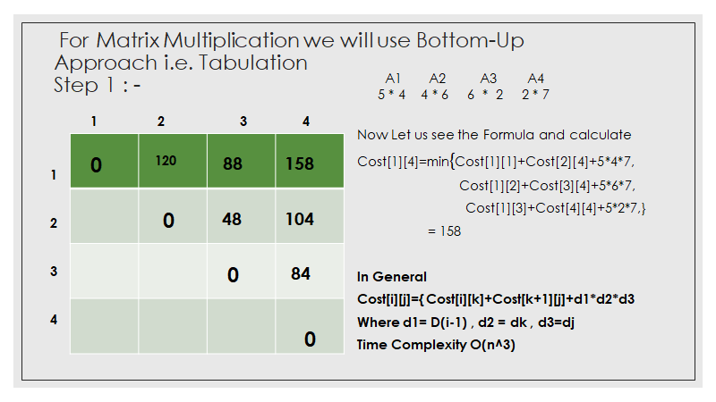
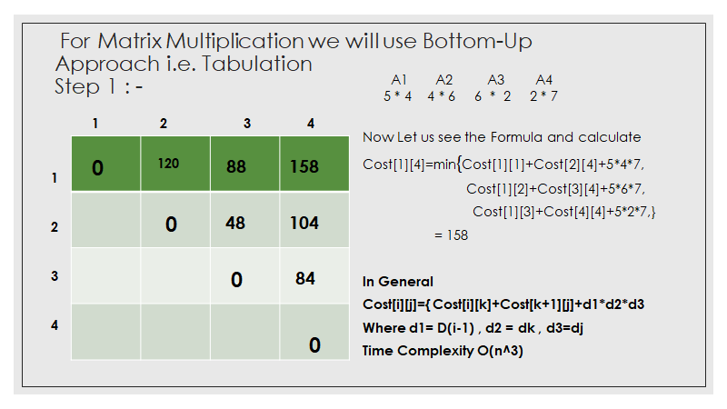

Introduction
Gogeto, May 20, 2020
Dynamic programming is basically an optimization algorithm. It means that we can solve any problem without using dynamic programming but we can solve it in a better way or optimize it using dynamic programming.
The basic idea of dynamic programming is to store the result of a problem after solving it. So when we get the need to use the solution of the problem, then we don't have to solve the problem again and just use the stored solution.
Where to use Dynamic Programming?
-
Optimal Substructure
A problem is said to have optimal substructure if an optimal solution can be constructed efficiently from optimal solution of its subproblems. Simply stated as expressing a bigger problem into smaller sub-problems.
- Overlapping Sub-Problems
Same sub-problems occur again and again. So instead of computing for those values again and again we can store them and use it when needed.
Two different ways to store the value: -
-
Tabulation (Bottom-Up)
-
Memoization (Top-Down)
See More
MULTISTAGE GRAPH
- Tabulation (Bottom-Up)
- Memoization (Top-Down)
A directional and weighted graph and vertices are divided into stages and edges are connecting vertices from one stage to another only.
Here,there are various path from source to sink.We need to select the one with minimum cost.
We use tabulation method to do this.
| V | 1 | 2 | 3 | 4 | 5 | 6 | 7 | 8 | 9 | 10 | 11 | 12 |
|---|---|---|---|---|---|---|---|---|---|---|---|---|
| Cost | ||||||||||||
| d |
For each vertex we need to find cost and d.Cost of any vertex is sum of cost of edges going to sink. Here d is the vertex through which we get the minimum cost. Cost(stage,vertex no),gives cost
We start to calculate the distance from the end vertex i.e 5th stage.
- 5th stage
- 4th stage
- 3rd Stage
- 2nd Stage
- 1st Stage
cost(5,12)=0
cost(4,9)= 4,given by vertex 12 cost(4,10)= 2,given by vertex 12 cost(4,11)= 5, given by vertex 12
Cost(3,6)= min{c(6,9)+cost(4,9),c(6,10)+cost(4,10)} = min {6+4,5+2} Cost(3,6)= 7,given by vertex 10 Cost(3,8)= min {c8,10)+cost(4,10),c(8,11)+cost(4,11)} = min{5+2,6+5} = 7,given by vertex 10
Cost (2,3) = min{c(2,6)+cost(3,6),c(2,7)+cost(3,7),c(2,8)+cost(3,8)} = min{4+7,2+5,1+7} = 7,given by vertex 7 Cost(2,3) = min{c(3,6)+cost(3,6),c(3,7)+cost(3,7)} = min{2+7,7+5} = 9,given by 6 Cost(2,4) = 18,which is given by vertex 8 Cost(2,5) = min{c(5,7)+cost(3,7),c(5,8)+cost(3,8)} = min{11+5,8+7} = 15,which is given by 8
cost(1,1) = min{c(1,2)+cost(2,2),c(1,3)+cost(2,3),c(1,4)+cost(2,4), c(1,5)+cost(2,5)} = min{9+7,7+9,3+18,2+15} = 16,which is given by vertex 2 or 3
| V | 1 | 2 | 3 | 4 | 5 | 6 | 7 | 8 | 9 | 10 | 11 | 12 |
|---|---|---|---|---|---|---|---|---|---|---|---|---|
| Cost | 16 | 7 | 9 | 18 | 15 | 7 | 5 | 7 | 4 | 2 | 5 | 0 |
| d | 2/3 | 7 | 6 | 8 | 8 | 10 | 10 | 10 | 12 | 12 | 12 | 12 |
Check the Code :- C Code CPP Code
All Pair Shortest Path
The Floyd Warshall Algorithm is for solving the All Pairs Shortest Path problem. As a result of this algorithm, it will generate a matrix, which will represent the minimum distance from any node to all other nodes in the graph.
We initialize the solution matrix same as the input graph matrix as a first step. Then we update the solution matrix by considering all vertices as an intermediate vertex. The idea is to one by one pick all vertices and updates all shortest
paths which include the picked vertex as an intermediate vertex in the shortest path. When we pick vertex number k as an intermediate vertex, we already have considered vertices {0, 1, 2, .. k-1} as intermediate vertices. For every pair (i,
j) of the source and destination vertices respectively, there are two possible cases.
- k is not an intermediate vertex in shortest path from i to j. We keep the same value of mat[i][j] as it is.
- k is an intermediate vertex in shortest path from i to j. We update the value of dist[i][j] as mat[i][k] + mat[k][j] if mat[i][j] > mat[i][k] + mat[k][j]
Check the Code :- C Code CPP Code
Matrix Multiplication
 

Matrix chain multiplication (or Matrix Chain Ordering Problem, MCOP) is an optimization problem that can be solved using dynamic programming. Given a sequence of matrices, the goal is to find the most efficient way to multiply these
matrices. The problem is not actually to perform the multiplications, but merely to decide the sequence of the matrix multiplications involved.
There are many options because matrix multiplication is associative. In other words, no matter how the product is parenthesized, the result obtained will remain the same. For example, for four matrices A, B, C, and D, we would have:
((AB)C)D = (A(BC))D = (AB)(CD) = A((BC)D) = A(B(CD)).
However, the order in which the product is parenthesized affects the number of simple arithmetic operations needed to compute the product, that is the computational complexity.
For example, if A is a 10 × 30 matrix, B is a 30 × 5 matrix, and C is a 5 × 60 matrix, then
computing
(AB)C needs (10×30×5) + (10×5×60) = 1500 + 3000 = 4500 operations, while
computing A(BC) needs (30×5×60) + (10×30×60) = 9000 + 18000 = 27000 operations.
Clearly the first method is more efficient.
With this information, the problem statement can be refined as "how to determine the optimal parenthesization of a product of n matrices?" Checking each possible parenthesization (brute
force) would require a run-time that is exponential in the number of matrices, which is very slow and impractical for large n. A quicker solution to this problem can be achieved by breaking up the problem into a set of related subproblems. By
solving subproblems once and reusing the solutions, the required run-time can be drastically reduced. This concept is known as dynamic programming. See More
Single Source Shortest Path
Bellman Ford's Algorithm
The Bellman–Ford algorithm is an algorithm that computes shortest paths from a single source vertex to all of the other vertices in a weighted digraph.
It is slower than Dijkstra's algorithm for the same problem, but more versatile, as it is capable of handling graphs in which some of the edge weights are negative numbers.
In this
- Relax the edges n-1 time
- If after relaxing n-1 time ,if we relaxe once more and if value changes then it has negative cycle.So Bellman Ford can’t be applied.
If (d[u]+c(u,v) < d[v] ) then, d[v]=d[u]+c(u,v) See More
Check the Code :- C Code CPP Code
0-1 KnapSack Problem
Given a bag of a certain capacity, W. Given some items with their weights and profit(values). How do you fill this bag so that you get the maximum profit ??
Note:- The item aren’t breakable you need to consider total weight.
Let weight elements = {10,40,30,50}
Let weight values = {5, 4, 6,3}
KnapSack Capacity=10
Check the Code :- C Code CPP Code
Optimal Binary Search Tree
Given keys and frequency at which these keys are searched, how would you create binary search tree from these keys such that cost of searching is minimum.
When we know the frequency of searching each one of the keys, it is quite easy to compute the expected cost of accessing each node in the tree. An optimal binary search tree is a BST, which has minimal expected cost of locating each node
The optimal cost for freq[i..j] can be iteratively calculated using following formula.
COST=sum(row,col,freq)+((k>row)? cost[row][k-1]:0)+((k< col)? cost[k+1][col]:0);
Make each node root one by one and compare each one of their cost. K is considered as root.
Check the Code :- C Code CPP Code
Travelling Salesman Problem
You have a travelling salesman and he have to travel set of cities.Salesman has to return to its
original source from where he started. During his journey we have to minimize total distance travelled
by him.
The distance is given by adjacency matrix.
dist[i][j] = Gives the distance between two cities
if they are directly connected by an edge
dist[i][j] = If they are not connected then they are reprsented
as INT_MAX.
Note the difference between Hamiltonian Cycle and TSP.
We are talking about a hamiltonian cycle.Here we know that Hamiltonian Tour exists
(because the graph is complete). It means covering all the vertices once through set of edges
and we come back to the starting node. Output of a travelling salesman problem minimum weight hamiltonian
cycle.
We can do this by Dynamic Programming using Top-Down Approach.It is an optimization to recursion. We use
memoization to avoid overlapping subproblems.
And we can use bitmask to keep a record of cities visited so far.